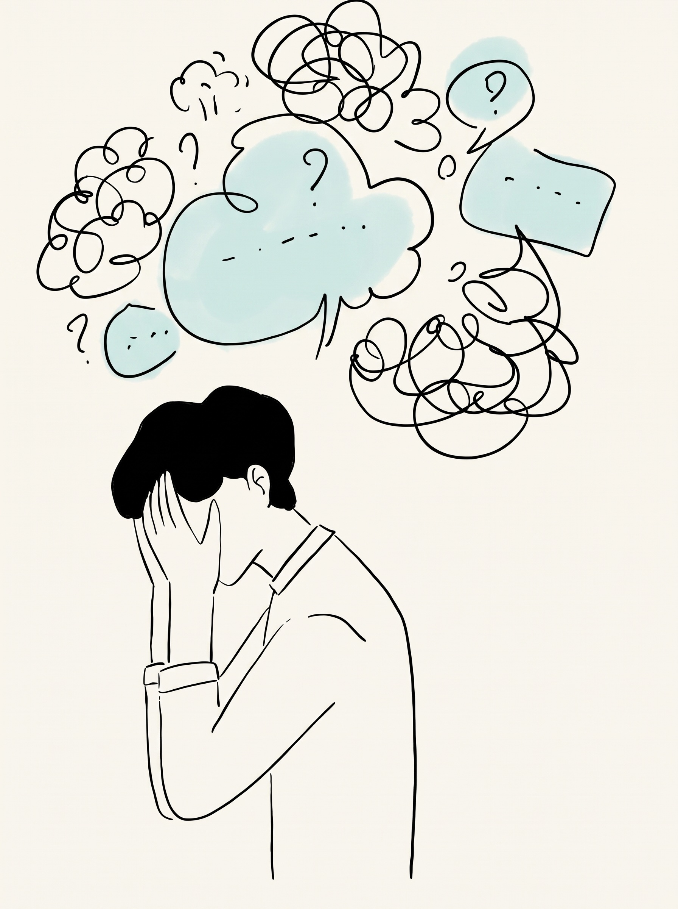
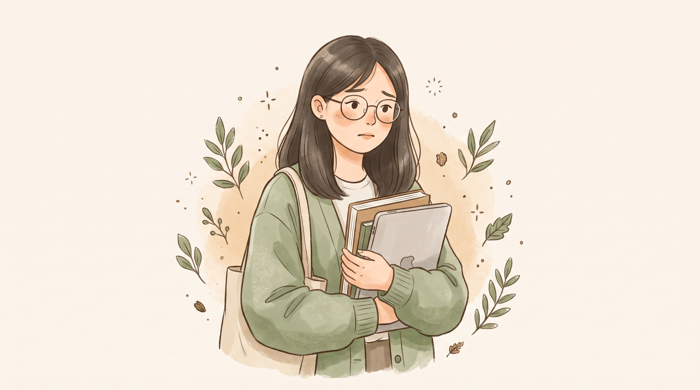
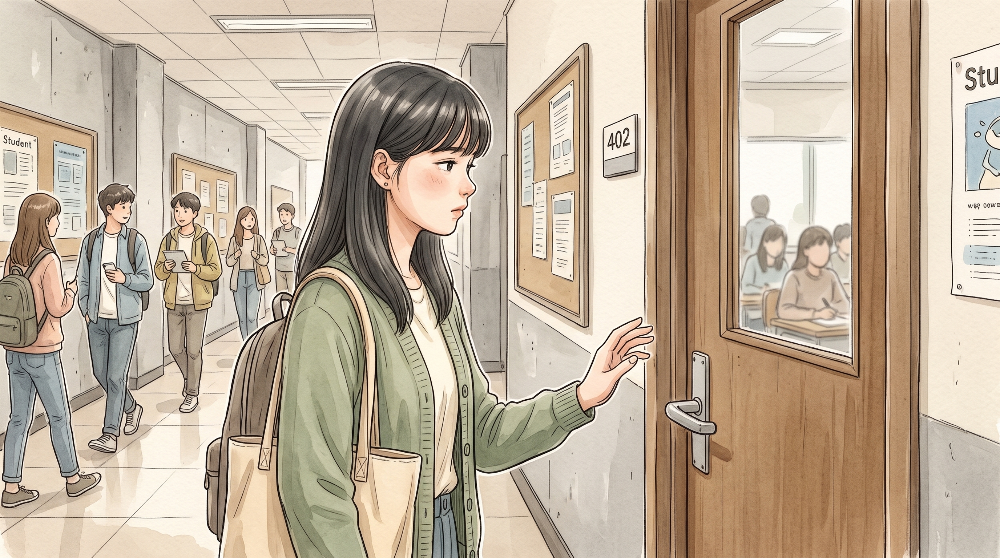

On-Campus • Free
STUDENT SUPPORT
HKBU Counselling (CDC)
Confidential individual counselling, workshops, and study adjustments for Hong Kong Baptist University students.
Visit HKBU Counselling ↗An interactive guide for university students in Hong Kong
More than just shyness. Explore what drives social anxiety — and discover where support may begin, at your own pace.

01 / UNDERSTANDING
Explore how thoughts, feelings, physical reactions and avoidance can connect — and how psychological concepts help explain the experience.
INTERACTIVE EXPLORATION
Select each stage to explore how a difficult social experience can reinforce itself. The cycle is a learning model, not a description of everyone's experience.
STAGE 01
A situation such as entering a tutorial, joining a group conversation or speaking in class may trigger anxiety.
Example: “I have to introduce myself to people I don't know.”
Explore how key disciplines interact within the study of social anxiety:
Social anxiety disorder is associated with heightened reactivity in the amygdala — the brain's threat-detection system — and with differences in serotonin signalling. Twin studies suggest a moderate genetic contribution (roughly 30–40%).
However: biology is not destiny. These findings describe group-level patterns and cannot diagnose an individual. A racing heart before a presentation is a normal human response, not proof of a disorder.
The leading model (Clark & Wells, 1995) describes a cycle: a social situation triggers a negative self-image, attention turns inward, "safety behaviours" (avoiding eye contact, rehearsing sentences) are used, and afterwards the person replays the event and interprets it as failure. The cycle then strengthens.
Cognitive Behavioural Therapy and graded exposure are the most strongly evidenced treatments. Therapy is not a one-size-fits-all solution, and its effectiveness depends heavily on access to care.
In Hong Kong, concerns around face (面子), family expectation, and academic competition can intensify the fear of being judged. The Hong Kong Mental Morbidity Survey found that most people with common mental disorders never seek professional help.
However: stigma does not act identically on everyone. Social anxiety is not "caused" by culture, and no cultural pattern can predict how a specific person will feel or act.
Screening tools such as the Mini-SPIN and the 17-item SPIN are validated for screening, not diagnosis. They trade sensitivity against specificity: some people who score above the threshold will not meet diagnostic criteria, and some who score below it will.
Online self-screening raises real ethical questions — what happens to the data, how results are worded, and whether a score might frighten or falsely reassure someone. Responsible design means clear framing, no data collection, and a direct route to real support.
Universities are increasingly investing in counselling services, peer support networks, and reasonable adjustments — such as alternative assessment formats for students who find presentations disabling.
While these programmes are valuable, they are not a substitute for professional clinical care when it is needed.
Most people first notice social anxiety in their teenage years.
What this means: Social anxiety often begins early in life (before age 17), but many people wait years before seeking help. The biggest barrier isn't a lack of resources—it's the fear of being judged. Knowing this helps us understand why creating a non-judgmental, supportive environment is the most important step in encouraging people to reach out.
Tracking the massive gap between symptom onset and professional care.
Early signs of social anxiety appear
Finally receiving clinical support
The Consequence of Delay: This 14-year gap highlights that recognizing symptoms rarely leads to immediate help. Left untreated, social anxiety can severely restrict academic and social development during a student's most formative years.
This is a short, private check based on the Mini-SPIN, a 3-question screening tool used by clinicians to identify likely social anxiety disorder. It takes about one minute. Your answers stay in your browser — nothing is sent anywhere.

Listen to Mei's Inner Voice (Scene 1)

Mei stands outside Room 402. The tutorial starts in two minutes. She can hear laughter inside. Her heart rate spikes. She reaches for the handle, then stops.
Later, the project group chat pings: "Who wants to present?" Mei types: "I can do the intro." She looks at the words. Deletes them. Closes the app.
In class, the tutor asks Mei for her view on the reading. The room goes quiet. She has a split second to decide.
She says something short, hears her own voice too loudly, and spends the next twenty minutes replaying it.
Mei talks to a friend after class. "Crowds are hard for me," she says. Her friend just nods. It wasn't a disaster. It was a small, safe step.
HONG KONG SUPPORT FINDER
Filter by the kind of support you feel comfortable with. Always check each provider's official page for current hours and eligibility.
STUDENT SUPPORT
Confidential individual counselling, workshops, and study adjustments for Hong Kong Baptist University students.
Visit HKBU Counselling ↗PUBLIC INFORMATION
Hong Kong mental health educational guides, practical coping tips, and community resource directories.
Visit Shall We Talk ↗ONLINE TEXT SUPPORT
Free, anonymous text-based emotional support for young people in Hong Kong — ideal if phone calls feel overwhelming.
Visit Open Up ↗EMOTIONAL SUPPORT
24-hour emotional support and crisis prevention services for anyone experiencing distress.
Visit Samaritan Befrienders ↗INTERACTIVE REFLECTION BUDDY
Select a common university worry below or share what's on your mind to explore a small, manageable next step. Private — nothing is saved or sent.
This companion offers gentle reflection prompts, not clinical advice. Choose only a step that feels safe for you.
This is not a diagnostic tool. It is a simple awareness exercise.
0 of 5 completed today.

If you or someone else is at immediate risk, contact local emergency services (999 in Hong Kong) or go to the nearest emergency department. If you can, stay with a trusted person while getting help.
07 / PROJECT PROCESS
Behind Beyond Shyness: the thinking, research and development process, and the role of the AI Buddy as a support tool.